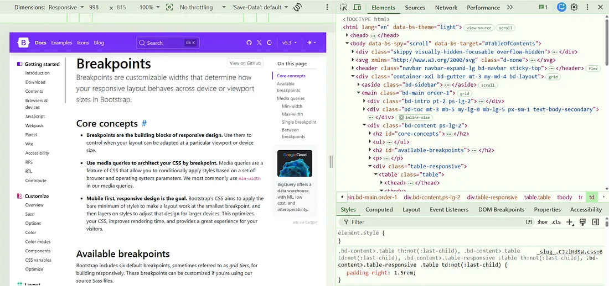

Why Responsive Design is More Than Just Media Queries


"Responsive design isn’t about adding more media queries — it’s about building flexible layouts that adapt naturally to every screen size."
Hey everyone! 👋
If you are a frontend developer, you have probably written CSS media
queries many times.
Something like:
@media (max-width: 768px) {
.card {
width: 100%;
}
}
And yes, media queries are one of the most important tools we have for building responsive websites.
But here is the thing:
Responsive design is not just about writing media queries.
A website can have 10, 20, or even 50 media queries and still provide a bad experience on mobile.
So, in this article, let’s understand responsive design from a practical frontend-development perspective.
What Does Responsive Design Actually Mean?
In simple terms, responsive design means:
A website should be able to adapt its layout and content according to the available screen space and the device being used.
Think about a website that looks like this on a desktop:
```
---------------------------------------------------------
| Logo Home About Products Contact |
---------------------------------------------------------
| Card 1 | Card 2 | Card 3 |
| | | |
---------------------------------------------------------
```
On a desktop, having three cards in one row might look perfect.
But on a mobile screen:
```
-----------------------
| Logo Menu |
-----------------------
| Card 1 |
| Card 2 |
| Card 3 |
```
We don’t simply make everything smaller.
We change the layout according to the available space.
That’s the real idea behind responsive design.
Why Is Responsive Design Important?
Most of us use smartphones every day to browse websites, purchase products, read articles, fill out forms, and use web applications.
Even Google also uses mobile-first indexing for most websites, meaning the mobile version is primarily used for indexing and evaluation.
So, when we build a website, thinking only about a 1920px desktop monitor isn’t enough.
We need to think about:
- Mobile Phones
- Tablets
- Laptops
- Desktop
- Other different screen orientations
And this is where responsive design becomes important.
First, Let’s Talk About Breakpoints
Before writing media queries, developers often need to decide when the layout should change.
For example, maybe we want:
- 3 Cards on desktop
- 2 Cards on tablets
- 1 Card on mobile
These points where the layout changes are called breakpoints.
If you use Bootstrap, you may already be familiar with breakpoints such as:
```
Extra small < 576px
Small ≥ 576px
Medium ≥ 768px
Large ≥ 992px
Extra large ≥ 1200px
Extra extra ≥ 1400px
```
These are the default breakpoints used by Bootstrap 5, However, one important thing to understand is:
These aren’t universal device sizes.
CSS doesn’t say that every mobile device is exactly 576px or every tablet is exactly 768px.
A breakpoint should generally be chosen based on when your layout needs to change, rather than simply thinking:
“This is an iPhone breakpoint.”
For example, if your navigation starts breaking at 850px, you might need a breakpoint around that width regardless of the specific device.
Now Let’s Talk About Media Queries
Media queries allow us to apply CSS based on certain conditions, such as viewport width i.e vw.
A simple example:
@media (max-width: 767px) {
.card {
width: 100%;
}
}
Here, when the viewport is 767px or smaller, the card takes the full available width.
We can also combine conditions:
@media (min-width: 768px) and (max-width: 991px) {
.card {
width: 50%;
}
}
This can be useful when we specifically want different behavior between tablet and desktop sizes.
Media Queries Are Only One Piece of Responsive Design
Imagine that you are building a product page.
You write:
@media (max-width: 768px) {
.product-card {
width: 100%;
}
}
Great, But then you notice:
- The heading is too large.
- The image is overflowing.
- The button is too small to tap.
- The text has unnecessary line breaks.
- The card has a fixed height and the content is overflowing.
You could solve every problem with another media query, But eventually you might end up with something like:
@media (...) { }
@media (...) { }
@media (...) { }
@media (...) { }
@media (...) { }
@media (...) { }
This is where responsive design can become unnecessarily complicated.
Instead of constantly asking:
“Which media query should I add?”
we should ask:
“Can I make the layout flexible enough that it adapts naturally?”
And that’s where other CSS techniques become important.
Use Fluid Widths
One of the simplest examples is using percentages instead of always using fixed widths.
Instead of:
.container {
width: 1200px;
}
we can use:
.container {
width: 90%;
max-width: 1200px;
margin: 0 auto;
}
Now the container can shrink when the viewport becomes smaller while still maintaining a maximum width on larger screens, also we can use relative units such as %, rem, can use the flexbox and grid properties of css.
This is a simple change, but it can reduce the number of media queries we need. Yippee!
CSS Frameworks: Because Sometimes We Have Work to Finish
In real-world development, we’re not always going to write every piece of responsive CSS from scratch.
That’s where CSS frameworks can be extremely useful.
Two popular examples are:
- Bootstrap
- Tailwind CSS
I’ve personally worked quite a bit with Bootstrap, and one reason I like it is that it gives you ready-made responsive utilities and components.
This can give us:
And if you need a navbar, Bootstrap already provides a ready-made responsive navbar component.
Instead of spending half an hour creating a navbar from scratch, you can use the framework and focus on the actual project.
That’s one of the reasons frameworks are so useful in production.
Tailwind CSS follows a different, utility-first approach, but it also provides responsive utilities that let us change styles at different breakpoints.
Of course, frameworks don’t magically solve every responsive problem.
Sometimes the project has a custom design or don’t match what we need.
But frameworks can definitely reduce the amount of repetitive CSS we have to write.
How Do I Test a Responsive Website?
After making responsive changes, I usually open the browser’s developer tools.

In Chrome, the Toggle Device Toolbar lets us simulate different viewport sizes.
And yes, DevTools are incredibly useful But there is one thing I don’t completely trust:
my browser pretending to be a phone. 😂
It can simulate the viewport, but a real phone can still reveal problems with Touch interaction, Scrolling, Font rendering, Performance, Orientation etc
So before sending a website to production, I always think:
“Let’s see what happens on an actual phone.”
Because there is nothing quite like opening your beautiful responsive website on your phone and discovering a horizontal scrollbar that you somehow didn’t see for the last two hours. 😭
Try It Yourself
Okay, enough reading. Time to make your CSS earn its salary! 😂
Take a simple webpage or card component you’ve already built and try making it responsive using CSS media queries.
Start with the desktop version and then slowly make the browser window smaller. Now ask yourself:
- 📱 What needs to change on smaller screens?
- 📐 Should the width, font size, or spacing adjust?
- 🧭 Should the layout change from rows to columns?
👀 And most importantly… why did everything suddenly move to a place you never invited it? 😂
Don’t worry if your layout looks a little weird at first. That’s completely normal. Responsive design is learned by experimenting, breaking things, fixing them, and occasionally staring at your CSS wondering what you did wrong. 😅
So, open your code editor , pick a component, resize that browser, and see how well your CSS survives the test! 🚀
Hope You Enjoyed This Article
If you made it this far, congratulations — you have officially survived another frontend article without adding a random !important . 😂
And if your website is still not responsive after reading this…
Don’t worry.
Just remember the stages of frontend development:
```
1. It doesn't work.
↓
2. Add CSS.
↓
3. It works on my laptop.
↓
4. Open it on mobile.
↓
5. "What happened here?" 😭
```
We’ve all been there. 😂
So, the next time you’re making a website responsive, don’t just keep throwing media queries at the problem until your layout finally behaves.
Take a step back and ask yourself:
Is the problem really the breakpoint, or is my CSS just having a bad day? 😄
If you enjoyed the article, found something useful, or simply recognized one of your own responsive-design disasters, feel free to share your thoughts.
If you have any questions, run into an issue, or have an idea you'd like to discuss, feel free to reach out to me. I'd be happy to connect and help where I can 🚀.